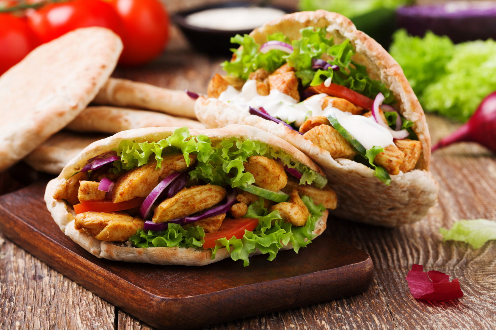

Gyros

Description
Make these Greek-style chicken gyros on the barbecue or grill, served with warm pittas to stuff with tomatoes,
onion, tzatziki and chips. Perfect for a summer gathering
- 12 boneless, skinless chicken thighs
- 500g Greek yogurt
- 100ml olive oil
- 1 tbsp ground coriander
- 1 tbsp ground cumin
- 4 garlic cloves, very finely grated or crushed
- First, whisk all the marinade ingredients together with 1 tsp salt in a large bowl or, better still, a large
plastic container that has a lid. Open out each chicken thigh, cover with a piece of baking parchment and
flatten it with your hand, then lift off the paper and cut the thigh in half. Tip into the marinade and mix
so it’s completely coated. Cover, chill and marinate for at least 1 hr or up to 24 hrs – the longer, the
better.
- Thread all the chicken onto two skewers so that both skewers go through each piece of meat, packing down
tightly as you go to make a compact kebab (see tip, below).
- Light a lidded barbecue, and let the flames die down. Once the coals have turned ashen, pile them up on one
side with a single layer of coals scattered around the other side. Lay the chicken kebab on the side of the
barbecue with only a few coals underneath. Put the lid down and cook for 45 mins, turning every 15 mins. To
finish, lift the lid and roll the kebab over to the hotter side to char the meat, turning it every few
minutes until well browned and cooked through. Prise the chicken pieces apart in the centre to check they’re
cooked, or use a digital cooking thermometer – it should read 70C or more. Leave to rest for 5-10 mins while
you cook the pittas (see recipe, opposite). Bring the kebab to the table and carve into thin slices with a
serrated knife. Pile the carved meat into the warm pittas, then the sliced red onions and tomatoes, chips
and tzatziki (see our recipes, below).